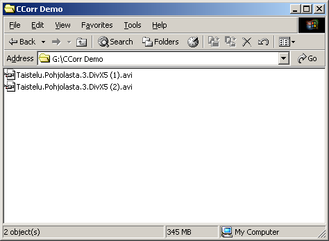
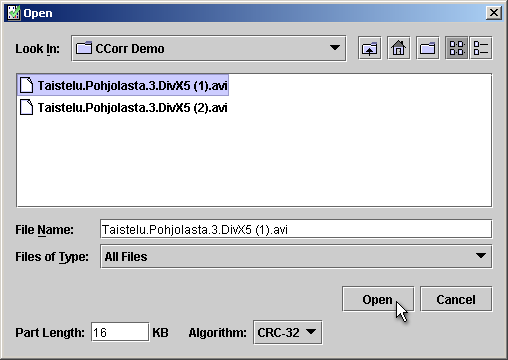
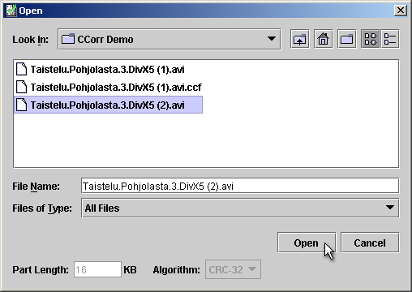
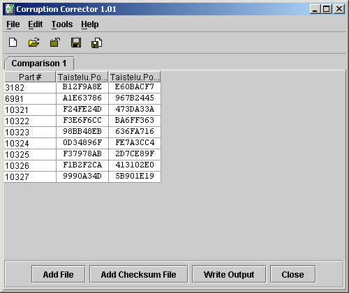

Written by Esko Luontola on July 1st 2004
It is best to learn using this program by an example. Let's assume that you have a 56kbps modem and you have already twise downloaded Bofferi Production's (www.bofferi.com) latest movie called Taistelu Pohjolasta 3 (DivX5 compressed AVI file, 184 MB), but all of your copies were corrupted during transfer.
Naturally you don't want to waste another 9 hours downloading it, because it is possible to fix the file by combining
the corrupt copies that you have. You know that the CRC of a good copy should be 38CF35F2, so you can
easily verify if you managed to repair the file.
PS: If you can contact somebody who has a good copy of the file, you can use Zidrav (sourceforge.net/projects/zidrav) to fix the file quick and easy. Also if you know somebody who has another corrupt copy, but corrupted in different places than your own file, you can use Zidrav to get a copy of his file and then fix them with Corruption Corrector.
Organize all the corrupt copies so that you won't mix them. Adding a number, letter or checksum to the file name of each copy should do the trick.

Start Corruption Corrector and you'll get a blank comparison. Click the Add File button.
Select the first one of the files. You can change the Part Length and Algorithm if the default values are not good for you. After clicking Open it will take some time for the program to read the file.


Add all the rest of the files just like the first one. You can change the Part Length and Algorithm only when adding the first file.

Now we can see all the differences between those files. The only problem left is to figure out which of those parts are corrupt and which are not.

Right-click the first column a couple of times so we can see the corruption ranges in megabytes. You can also resize the columns to see all the numbers.

Let's look at the position of the first corruption. It is at 49.7-49.72 MB. I've opened the files in VirtualDubMod (virtualdubmod.sourceforge.net) and scrolled to the frames in the corruption area (notice the next screen's bottom right corner).

The file number 2 has clearly visible corruptions. With video files the corruptions can be anything from unrenderable frames (VDub will show an error message in the status bar) to just a couple of pixels with a different color. Sometimes the corruption is in the audio track and it's almost impossible to find it.
The file number 1 had no corruption at that place, so let's mark that part for file 1 good and file 2 bad. You can do this by right-clicking the cells once and twise.

The following screen will show how the markers change when right-clicking. You can use the yellow color ("unsure") to mark parts that you have already went through, but you were not able to identify the corrupt file. When you write the output file, all that matters is the green ("good") parts.

The part at 109.22-109.23 MB was a hard one since the corruption was not as visible as in the previous occasion. To know exactly which frames are corrupt, I use File Verification Utility (fvu.home.sapo.pt). In FVU right-click the file and select Avi Info. Set the bad offsets (double-click the cell in CCorr and you can copy the byte offsets to clipboard) and press the button, and you'll get the bad frames.


Finally I marked file 2 bad and file 1 good. (I wasn't really able to see the corruption with my eyes, so I cheated a bit when making this tutorial. In a real situation I would have marked both of the files "unsure")
The last area consists of many parts. The file 1 is corrupted as can be seen from the following picture. Actually the file is incomplete and it ends right after that.

When there are many sequential parts, you can select all of them to set the markers faster. Click the column's first cell and drag your mouse to the last cell. All of the cells need to have the same mark and be of the same file, or you can't change the markers.

All the corruptions have been located. There needs to be at least one "good" part for each row, or it will not be possible to repair the file. Click the Write Output button, choose where to save the fixed file and wait for a moment.


Now the file has been fixed. If you know what the CRC of the file should be, you can verify the file with QuickSFV (www.quicksfv.org), hkSFV (www.big-o-software.com) or a similar program. Delete the corrupt copies only after you are sure that you managed to fix the file.